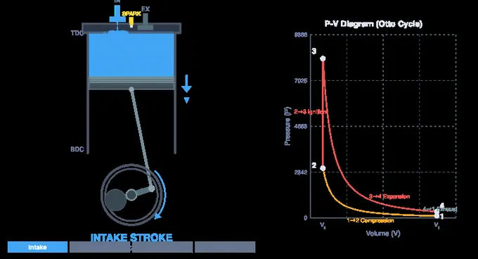
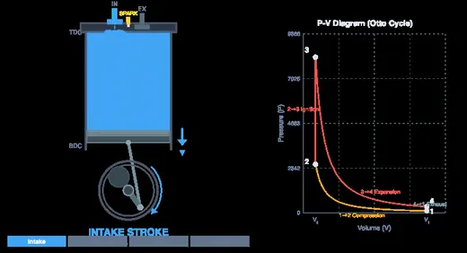
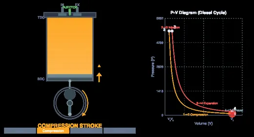

Four Stroke Engine Simulator
Otto & Diesel Cycles — Animate • Learn • Practice • Quiz
Display Controls
⚙ Engine geometry, breathing & valve timing
Valve timing drives the animated valve lift, the blowdown at EVO and the valve timing diagram. The four ideal state points are still evaluated between BDC and TDC, exactly as the textbook Otto and Diesel cycles are, so the efficiency here always matches the closed-form formula.
Σ Live equations — values substituted from the current engine
📋 Cycle state points — P, V and T at states 1 to 4
⚡ Efficiency breakdown — ideal versus real, and why they differ
💡 What-if coach — insights from the current operating point
1 Overview
The Four Stroke Engine Simulator animates the internal combustion engine through all four strokes — intake, compression, power and exhaust — while solving the air-standard Otto (petrol, spark ignition) or Diesel (compression ignition) cycle behind the picture. Piston, connecting rod and crankshaft are drawn true to scale: the crank radius is half the stroke you type in, the rod is your rod ratio times that, and the bore comes from the bore/stroke ratio. Nothing on the canvas is decorative.
Give it a real engine — bore, stroke, number of cylinders, compression ratio, speed, manifold pressure — and it returns the numbers an engineer actually quotes: IMEP, indicated and brake power, brake torque, BSFC, volumetric efficiency and both the ideal and the realistic efficiency. Three diagrams are available for the same operating point: P–V, T–s and a valve timing diagram.
2 Configuring the Engine
- Cycle — Petrol (Otto) or Diesel. Switching also moves the compression-ratio range (6–14 for petrol, 12–24 for diesel) and resets the air-fuel ratio and heat input to values that suit that cycle.
- Engine preset — six real engine classes: a 125 cc motorcycle, a 2.0 L petrol sedan, a 1.4 L turbo petrol, a 2.0 L TDI diesel, a 6.7 L truck diesel and a 5 kVA diesel genset. Edit any value and the dropdown switches itself to Custom.
- Units — the SI / Imperial toggle converts every readout, every diagram axis and every input box (mm ↔ in, kPa ↔ psi, K ↔ °R, kW ↔ hp, N·m ↔ lbf·ft, g/kWh ↔ lb/hp·h). Every calculation stays in SI internally; only the display changes.
- Engine speed is a real rpm — it drives power, torque and fuel flow. Animation speed is separate and changes only how fast you watch; the readouts always report the rpm you set.
- Compression ratio, heat input qin and manifold pressure set the operating point. Every slider has a companion number box — type an exact value and press Enter.
- Engine geometry, breathing & valve timing (the collapsible panel) holds bore, stroke, cylinder count, con-rod ratio, air-fuel ratio, mechanical efficiency, exhaust back-pressure, intake temperature and the four valve events IVO, IVC, EVO and EVC.
3 Running the Cycle
Play runs the animation continuously; Step advances exactly one stroke so you can freeze the engine mid-compression and read the state. Reset returns every parameter to its default. Two keyboard shortcuts work whenever no input box has focus: Space plays and pauses, and S steps one stroke. Esc closes the calculations modal or the right-click menu.
Gas colour tracks the calculated pressure, not just the stroke name: the charge glows harder as it is squeezed and hardest at peak pressure. Gas-flow particles stream in past the intake valve and out past the exhaust valve, following the valve lift you set. The spark fires at TDC on the Otto cycle; on the Diesel cycle the injector sprays for exactly as long as the constant-pressure burn lasts, so you can watch injection stop at the cutoff point.
The first readout row is the instantaneous cylinder state — stroke, crank angle, pressure, temperature and volume at this instant. The second row is the cycle result and does not change as the crank turns: IMEP, indicated and brake power, torque, BSFC, brake thermal efficiency, peak pressure and temperature, displacement, volumetric efficiency, and (Diesel only) the cutoff ratio.
4 Reading the Three Diagrams
The Diagram selector sits on the top-left of the graph itself — the right-hand pane on a desktop, the lower pane on a phone. Tap P–V, T–s or Valves to switch what that pane draws; the engine cross-section beside it never changes.
- P–V — the pressure-volume trace with the four state points numbered. The volume axis is in real cm³, from the clearance volume to the full cylinder volume. The shaded area is the net work per cycle. The thin loop along the bottom is the gas-exchange (pumping) loop: throttle the engine down and watch it open up into real negative work.
- T–s — temperature against entropy. The two vertical lines are the isentropic compression and expansion; the area under 2→3 is the heat added and the area under 4→1 the heat rejected. The ratio of the enclosed area to the area under 2→3 is the thermal efficiency, visible directly.
- Valve Timing — the classical polar diagram with IVO, IVC, EVO and EVC marked and the valve overlap shaded across TDC, plus a valve-lift strip across the full 720°. A live pointer shows where the crank is now.
Display Controls, the matching panel pinned to the top-left of the engine side of the canvas, decides what is drawn: gas-flow particles, TDC/BDC and part labels, the efficiency equation, the diagram grid and the pumping loop. Reset display turns everything back on. On a phone it collapses to a single icon so it never covers the engine.
Right-click (long-press on touch) anywhere on the canvas for a menu: copy the current P, V and T, copy a performance summary, export CSV or PNG, toggle the grid, open the calculations, or reset.
5 Show Calculations, Learning Panels and Export
The calculator icon in the toolbar under the canvas opens a nine-step derivation for the operating point currently on screen, in classical mathematical notation: swept and clearance volume, the trapped charge, isentropic compression, heat addition, expansion, heat rejection and efficiency, mean effective pressure, power and torque, and finally fuel flow, BSFC and brake thermal efficiency. It is rebuilt every time you open it, so it always matches the current engine.
Below the readouts, four learning panels expand and collapse together: Live equations with your numbers substituted, a Cycle state points table of P, V and T at states 1 to 4, an Efficiency breakdown comparing the air-standard, indicated, brake and mechanical efficiencies, and a What-if coach that tells you what would happen if you changed the compression ratio, the heat input or the throttle.
Export CSV, beside it in the same toolbar, writes the full setup, every derived performance figure, the four state points and a 2°-resolution sweep of volume, pressure, temperature and valve lift around the whole 720° cycle — ready to plot in a spreadsheet for a lab report. Export PNG saves the canvas as it stands, watermarked.
6 Practice, Quiz and Explore
Explore holds 23 concept cards across four categories — Fundamentals, Thermodynamic Cycles, Engine Components and Performance — with the equations typeset properly. Practice generates 20 kinds of numerical problem with fresh numbers every time and a worked solution on demand: efficiency for both cycles, swept and clearance volume, MEP, indicated and brake power, torque, BSFC, brake thermal efficiency, friction power, isentropic compression, cutoff ratio, valve overlap and duration, volumetric efficiency and pumping loss. Quiz draws 8 questions from a pool of 26, each with an explanation whether you get it right or wrong.
7 Engineering Notes — What the Model Does and Does Not Do
- The cycle is a cold air-standard cycle. γ = 1.4, cv = 0.718 and cp = 1.005 kJ/kg·K are held constant, the working fluid is air, and combustion is modelled as heat transfer. The efficiency shown always matches the closed-form textbook result exactly — the simulator computes it state by state and the derivation in Show Calculations prints both so you can check.
- State 1 is solved, not assumed. The residual gas left in the clearance volume mixes with the fresh charge, so the temperature at BDC comes out a little above manifold temperature. That is why T1 reads around 320 K rather than 300 K, and it is where the residual gas fraction and the volumetric efficiency come from.
- Why qin is an input rather than something burnt. A stoichiometric petrol charge releases about 3000 kJ per kg of air. Fed into a constant-cv air-standard cycle that would predict a peak temperature near 4900 K, because the model has no dissociation and no rise in specific heat with temperature. Real petrol engines peak at 2500–2800 K. So heat input is set directly, as every textbook gas-power-cycle problem does, and the Efficiency breakdown panel shows what fraction of the fuel's energy that represents.
- Fuel flow comes from the real air-fuel ratio, not from qin. That is what makes BSFC and brake thermal efficiency realistic, and it is why the air-standard efficiency (around 60%) and the brake thermal efficiency (around 25%) are so far apart. That gap — finite burn rate, heat loss to the walls, dissociation, exhaust enthalpy and friction — is the single most important thing this simulator has to teach.
- Valve timing is a gas-exchange model, not a cycle modifier. IVO, IVC, EVO and EVC drive the animated valve lift, the particle flow, the blowdown decay when the exhaust valve cracks open, and the valve timing diagram. The four ideal state points are still evaluated between BDC and TDC, exactly as the textbook Otto and Diesel cycles are, so the efficiency stays checkable against the formula. A late-IVC Miller cycle, where the effective compression ratio really does fall below the geometric one, is described in the Explore cards but is not modelled here.
- Constant-volume combustion overstates peak pressure. Real combustion takes 40–60° of crank, so peak pressure arrives 10–15° after TDC with the piston already descending. The Otto idealisation puts all the heat in at TDC, which is why the peak pressure here runs higher than a real indicator diagram at the same IMEP.
- Volumetric efficiency is the ideal value. There are no flow losses, no intake tuning and no charge heating from the port walls in this model, so it sits near 100% for a naturally aspirated engine. Real engines reach 80–90% at the speed their intake is tuned for and less elsewhere — that shortfall is what shapes the torque curve.
How a Four-Stroke Engine Works — Interactive Simulator

The four-stroke internal combustion engine is the most widely used power source in automobiles, motorcycles, generators, and industrial machinery. Each complete power cycle requires four distinct strokes of the piston—Intake, Compression, Power, and Exhaust—corresponding to two full revolutions (720°) of the crankshaft. This simulator lets you visualise every stroke in real time, switch between petrol (Otto cycle) and diesel (Diesel cycle) operation, and enter a real engine — bore, stroke, cylinder count, compression ratio, speed and manifold pressure — to see its pressure, temperature, mean effective pressure, power, torque and fuel consumption. Three linked diagrams share the same operating point: the P–V indicator diagram, the T–s diagram and a valve timing diagram.
Understanding the Otto and Diesel Cycles
In a petrol engine, the Otto cycle governs the thermodynamic process. The air-fuel mixture is compressed isentropically, then ignited by a spark plug at top dead center (TDC), producing a rapid constant-volume pressure rise. The thermal efficiency depends only on the compression ratio: η = 1 − 1/rγ−1, where r is the compression ratio and γ is 1.4 for air. Typical petrol engines operate at compression ratios of 8:1 to 12:1, which gives air-standard efficiencies of 56–63% — roughly double what the engine actually delivers at the crankshaft, for reasons set out further down this page.
The Diesel cycle differs in its heat addition process: air alone is compressed to a high temperature (600–900 K), and fuel is injected under pressure, igniting spontaneously. This constant-pressure combustion introduces the cutoff ratio ρ, making the efficiency formula more complex. Diesel engines use higher compression ratios (14:1 to 22:1) and achieve better fuel economy, though the Diesel cycle efficiency for the same compression ratio is slightly lower than Otto due to the cutoff ratio penalty.


Key Engine Parameters
The compression ratio (r = V1/V2) is the ratio of cylinder volume at bottom dead center to top dead center. Higher compression ratios improve efficiency but increase mechanical stress and require higher octane fuel (petrol) or stronger construction (diesel). The mean effective pressure (MEP) is the constant pressure that, acting on the piston through one stroke, would produce the same net work as the whole cycle — so it measures how hard an engine works independently of its size, and it is directly proportional to torque. Enter a bore, stroke, cylinder count and speed and the simulator returns the swept volume, the trapped charge mass, IMEP and BMEP, indicated and brake power, brake torque, BSFC and volumetric efficiency for that engine.
Reading the PV Diagram
The pressure-volume (PV) diagram shows the thermodynamic state of the gas throughout the cycle. The enclosed area represents the net work output per cycle. In the Otto cycle, you’ll see two vertical lines (constant-volume processes) connected by two isentropic curves. In the Diesel cycle, the upper horizontal line represents the constant-pressure heat addition phase. Watch the PV diagram trace in real time as the piston completes each stroke.
Worked Otto-Cycle Efficiency — A Petrol Engine with Compression Ratio 10
Take a typical naturally-aspirated petrol engine: compression ratio r = 10, working fluid air (γ = 1.4 for the cold-air-standard analysis), intake conditions T1 = 300 K and P1 = 100 kPa, peak temperature T3 = 2000 K. Load the 2.0 L petrol sedan preset and trace it through:
| Step | Process | Working | Result |
|---|---|---|---|
| 1→2 | Isentropic compression: T2 = T1·rγ−1 | 300 × 100.4 | T2 = 754 K |
| 2→3 | Constant-volume heat addition (combustion): qin = cv(T3−T2) | 0.718 × (2000 − 754) | qin = 894 kJ/kg |
| 3→4 | Isentropic expansion: T4 = T3·(1/r)γ−1 | 2000 × 0.10.4 | T4 = 796 K |
| 4→1 | Constant-volume heat rejection: qout = cv(T4−T1) | 0.718 × (796 − 300) | qout = 356 kJ/kg |
| cycle | Thermal efficiency η = 1 − qout/qin | 1 − 356/894 | η = 0.602 (60.2%) |
| shortcut | Otto efficiency: η = 1 − 1/rγ−1 | 1 − 1/100.4 | 0.602 ✓ |
Three lessons drop out: (i) efficiency depends only on compression ratio and γ — not on peak temperature or pressure; (ii) real petrol engines achieve about 30%, not 60%, because of finite heat-release time, exhaust enthalpy loss, friction, and pumping losses; (iii) the only way to raise Otto efficiency is to raise r, which is limited by knock — the limit at which fuel auto-ignites before the spark. That is why high-octane fuel allows higher compression and therefore higher efficiency.
From Mean Effective Pressure to Power — A Worked 2.0 L Example
Efficiency tells you nothing about how big the engine is. To get from a cycle to a power figure you need the swept volume, the number of cylinders and the speed. Take the simulator’s 2.0 L petrol sedan preset — bore 86 mm, stroke 86 mm, four cylinders, r = 10.5, 2500 rpm, wide-open throttle, qin = 1350 kJ/kg, air-fuel ratio 14.7, mechanical efficiency 0.86:
| Quantity | Working | Result |
|---|---|---|
| Swept volume per cylinder | (π/4)(0.086)²(0.086) | 499.6 cm³ (2.00 L total) |
| Clearance volume | Vs/(r − 1) = 499.6/9.5 | 52.6 cm³ |
| Trapped charge at BDC | p1V1/RT1, T1 = 319 K after mixing with 4.2% residual gas | 0.611 g |
| End of compression | T2 = 319 × 10.50.4; p2 = 101 × 10.51.4 | 817 K, 27.3 bar |
| Peak of combustion | T3 = 817 + 1350/0.718 | 2699 K, 90.0 bar |
| Net work per kg | w = qin − qout = 1350 − 527 | 823 kJ/kg (η = 61.0%) |
| Net work per cycle per cylinder | 0.611 g × 823 kJ/kg | 0.501 kJ |
| IMEP | 0.501 kJ / 499.6 cm³ | 10.03 bar |
| Indicated power | IMEP · Vs · n · N/120 = 1003 × 5.00×10−4 × 4 × 2500/120 | 41.8 kW |
| Brake power and torque | 0.86 × 41.8; then T = 60˙W/2πN | 35.9 kW, 137 N·m |
| Fuel flow and BSFC | 0.586 g air / 14.7 per cycle × 4 cyl × 2500/120 | 11.95 kg/h, 333 g/kWh |
| Brake thermal efficiency | 35.9 kW / (fuel power) | 24.6% |
Two things are worth noticing. The divisor is 120, not 60 — a four-stroke engine fires once every two revolutions, so it makes half as many power strokes per minute as its speed. And the air-standard efficiency of 61.0% has become a brake thermal efficiency of 24.6%: the cycle is not the engine.
Why the Air-Standard Efficiency Is Roughly Double the Real One
Every gas-power-cycle question in a thermodynamics course answers “about 60%” for a petrol engine, and every real petrol engine answers “about 30%”. Both are correct; they are answers to different questions. The air-standard cycle assumes away, in order:
| Assumption | What really happens | Effect on efficiency |
|---|---|---|
| Constant specific heats, no dissociation | cv rises steeply above 1000 K and CO&sub2; and H&sub2;O dissociate above ~2000 K, absorbing energy | Large. The cold-air-standard model would predict a 4900 K peak from a stoichiometric charge; the real peak is 2500–2800 K |
| Instantaneous heat addition at TDC | Combustion takes 40–60° of crank; peak pressure arrives 10–15° after TDC | Several points — some of the burn happens while the piston is already descending |
| No heat transfer to the walls | 25–30% of the fuel energy goes into the coolant | Large |
| Exhaust rejected at constant volume | Gas leaves at 700–900 K carrying real enthalpy out of the pipe | Large |
| Frictionless, internally reversible | Piston rings, bearings, valvetrain and the oil and water pumps all take work | 10–25%, captured by the mechanical efficiency |
| No throttling | A part-load petrol engine breathes against a nearly shut plate | Severe at light load — this is the pumping loop on the P–V diagram |
The simulator shows this gap directly. It reports the air-standard efficiency (a function only of compression ratio, and of cutoff ratio for the Diesel cycle) alongside the indicated and brake thermal efficiencies computed from the real air-fuel ratio, and the Efficiency breakdown panel puts all four on the same scale.
Valve Timing, Overlap and the Pumping Loop
The four valve events do not sit neatly at TDC and BDC. A typical naturally-aspirated engine opens the intake about 10–20° before TDC and closes it 40–60° after BDC, exploiting the inertia of the incoming charge; the exhaust opens 40–60° before BDC so that blowdown — gas escaping under its own pressure — drops cylinder pressure before the piston has to push, and closes 10–20° after TDC.
The period around TDC when both valves are open is the valve overlap, equal to IVO + EVC. Wide overlap scavenges the combustion chamber and helps at high speed; it also lets fresh charge escape into the exhaust at idle, which is what gives a big-cam engine its lumpy note. Because a complete cycle is 720° but the cam only needs to open each valve once, the camshaft is geared to run at exactly half crank speed.
Set the manifold pressure below atmospheric in the simulator and watch the bottom of the P–V diagram: the intake stroke now runs below the exhaust stroke, enclosing a second, negative loop. That is pumping work, and its mean effective pressure (PMEP) is subtracted from the gross IMEP every cycle. It is the main reason a petrol engine is inefficient in traffic, and the main reason a diesel — which has no throttle and controls load by injecting less fuel — is not.
The Four Strokes — What Actually Happens Each 720° of Crankshaft
One full cycle of a four-stroke engine takes two crankshaft revolutions (720°). At 3000 rpm that is one cycle every 0.04 s. Press Step in the simulator to advance exactly one stroke at a time and read the cylinder state at each stage:
| Stroke | Piston motion | Valves | What is happening |
|---|---|---|---|
| 1. Intake | TDC → BDC | Intake open, exhaust closed | Cylinder volume grows; atmospheric air-fuel mix is drawn in. Real engines open the intake valve ~10° before TDC for inertial scavenging. |
| 2. Compression | BDC → TDC | Both closed | Mixture is squeezed by ratio r. Temperature rises adiabatically; just before TDC, the spark plug fires (typically 10–30° BTDC). |
| 3. Power (expansion) | TDC → BDC | Both closed | Combustion is complete at ~10° ATDC; the high-pressure gas does work on the piston. This is the only stroke that produces useful torque. |
| 4. Exhaust | BDC → TDC | Intake closed, exhaust open | Burnt gas pushed out. Exhaust valve typically opens ~50° before BDC to let blowdown reduce pumping work. |
The crank-to-cam ratio is 2:1 (the camshaft runs at half engine speed), which is why every other revolution one valve is open. The cam timing diagram is the engineering reality behind the simulator’s mode tabs.
125 cc Motorcycle vs 2 L Sedan — Same Cycle, Different Scale
| Parameter | 125 cc motorcycle | 2.0 L sedan |
|---|---|---|
| Displacement (single-cycle volume) | 125 cm³ | 2000 cm³ (typically 4 cylinders × 500 cm³) |
| Compression ratio | 9.5 : 1 | 10.5 : 1 |
| Bore × stroke | 52.4 × 57.8 mm | ~84 × 90 mm per cylinder |
| Peak power | ~11 kW at 8500 rpm | ~110 kW at 6000 rpm |
| Peak torque | ~10 N·m at 6000 rpm | ~190 N·m at 4000 rpm |
| BSFC (brake specific fuel consumption) | ~340 g/kWh | ~250 g/kWh (more efficient combustion at lower rpm) |
The motorcycle gets ten times the specific power per litre by spinning twice as fast — but it pays for it in fuel consumption. Small-engine high-rpm strategies are common where light weight matters more than absolute efficiency.
Otto vs Diesel — Why They Are Different Cycles, Not Just Different Fuels
Set the simulator to Diesel mode and compare the PV diagram. The compression and expansion strokes are essentially the same; the heat-addition (combustion) stroke is the key difference:
- Otto cycle — constant-volume heat addition. Spark ignites a homogeneous air-fuel mixture; combustion completes in roughly 2–3 ms while the piston is near TDC, so volume is approximately constant. The PV diagram shows a near-vertical line at the top.
- Diesel cycle — constant-pressure heat addition. Air is compressed to ~16 : 1; near TDC, fuel is sprayed and auto-ignites. The injection event lasts longer than the spark, so the piston is already moving down while heat is still being added. The PV diagram shows a near-horizontal line at the top.
- Why diesels are more efficient. A higher compression ratio (16–22 vs 9–12 for petrol) gives a higher cold-air-standard efficiency (η ≈ 65% theoretical for Diesel at r=20 vs 60% for Otto at r=10). In practice, diesels deliver ~40% brake efficiency vs ~30% for petrol.
- Why diesels need higher compression. They have no spark plug — fuel must auto-ignite from the heat of compression alone. Air temperature at TDC must exceed about 850 K, which requires r ≥ 14 or so.
Selected References
- Heywood, J. B. — Internal Combustion Engine Fundamentals, 2nd ed., McGraw-Hill, Chapters 1, 5 and 9. The definitive engineering text for IC engines.
- Cengel, Y. A. & Boles, M. A. — Thermodynamics: An Engineering Approach, 9th ed., Chapter 9 (Gas Power Cycles).
- SAE J1995 — Engine Power Test Code — Spark Ignition and Compression Ignition — Gross Power Rating. Defines the conditions under which an engine’s “peak power” spec must be measured.
- ISO 1585 — Road vehicles — Engine test code — Net power. The European equivalent.
Explore Related Simulators
If you found this four-stroke engine simulator helpful, explore our Two Stroke Engine Simulator, Thermodynamics Simulator, Heat Transfer Simulator, and Stress-Strain Diagram for more hands-on practice.